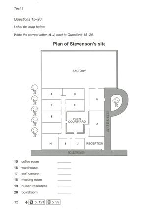
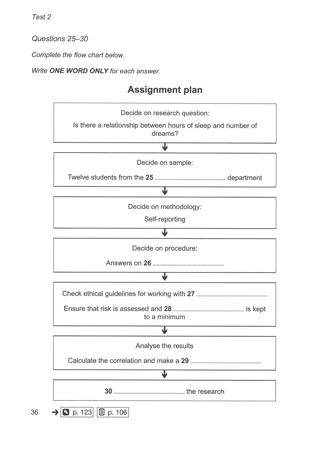
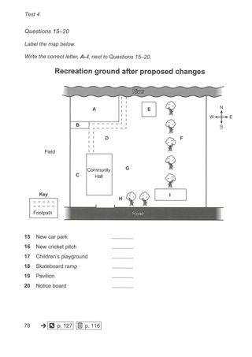

Listening visuals Cambridge 16Reviewed results: 122 confirmed issue records (86 duplicate pairs, 9 sequence inversions, 1 wrong-Part image, 26 clipped images); 23 suspected records. Counts overlap Parts/assets. Full reviewed CSV. Raw audit.json/findings.csv are detector output, not the final defect list. Fallback scope alone is not a defect. OCR ranges are incomplete hints.
All books · Cambridge 16: 16 Parts · exact current resolver outputCambridge 16 / Test 1 / Part 1
No confirmed/candidate defect detected; not a visual PASS
Q[1, 10]: 1 [Part fallback]
 #1 OCR Q[[1, 10]] · 1238×1751
#1 OCR Q[[1, 10]] · 1238×1751
PDF_012.jpg
assets/public/c202ff47ca53808ec0c0fcacaf78f07d929381f951e4126379728ba36e989034.jpg
asset-c202ff47ca53808ec0c0fcacaf78f07d929381f951e4126379728ba36e989034Cambridge 16 / Test 1 / Part 2
V0332:confirmed:duplicate_content
Q[11, 14]: 1, 2, 3 [Part fallback]
Q[15, 20]: 1, 2, 3
 #1 OCR Q[[11, 20], [11, 14]] · 1238×1751
#1 OCR Q[[11, 20], [11, 14]] · 1238×1751
PDF_013.jpg
assets/public/80cb87f90c2417685326eaf3ba35c6d2d97dc4ea92f5d5532419b0c91f5e72dc.jpg
asset-80cb87f90c2417685326eaf3ba35c6d2d97dc4ea92f5d5532419b0c91f5e72dc #2 OCR Q[[15, 20], [15, 20]] · 1238×1751
#2 OCR Q[[15, 20], [15, 20]] · 1238×1751
PDF_014.jpg
assets/public/db4c6c794d0ede138229f78830a1963dacf94679e6182c0ad55d498431be0208.jpg
asset-db4c6c794d0ede138229f78830a1963dacf94679e6182c0ad55d498431be0208
#3 OCR Q[[15, 20], [15, 20]] · 1238×1751
Test_1_Part_2_Stevensons_Site_Map.jpg
assets/public/3e78cdff4c015ab9469f25e2bc991773c549cf8b034f4daae5d928b57fc237d5.jpg
asset-3e78cdff4c015ab9469f25e2bc991773c549cf8b034f4daae5d928b57fc237d5Cambridge 16 / Test 1 / Part 3
No confirmed/candidate defect detected; not a visual PASS
Q[21, 22]: 1, 2 [Part fallback]
Q[23, 24]: 1, 2 [Part fallback]
Q[25, 30]: 1, 2 [Part fallback]
 #1 OCR Q[[21, 30]] · 1238×1751
#1 OCR Q[[21, 30]] · 1238×1751
PDF_015.jpg
assets/public/9561a4ae9612238a1ae905b2fe197aec1b92efb24dde99b9fb3f8876ee73880b.jpg
asset-9561a4ae9612238a1ae905b2fe197aec1b92efb24dde99b9fb3f8876ee73880b #2 OCR Q[[25, 30], [25, 30]] · 1238×1751
#2 OCR Q[[25, 30], [25, 30]] · 1238×1751
PDF_016.jpg
assets/public/fb0c01a3cab74e7c0a61bdd147d9400599ca12a74b4efbd3b8ba0fe58cdd2f81.jpg
asset-fb0c01a3cab74e7c0a61bdd147d9400599ca12a74b4efbd3b8ba0fe58cdd2f81Cambridge 16 / Test 1 / Part 4
No confirmed/candidate defect detected; not a visual PASS
Q[31, 40]: 1 [Part fallback]
 #1 OCR Q[[31, 40]] · 1238×1751
#1 OCR Q[[31, 40]] · 1238×1751
PDF_017.jpg
assets/public/53dbeacb6bb3e46375787c9ff510389f5e430842d5530caee29616e9f069b827.jpg
asset-53dbeacb6bb3e46375787c9ff510389f5e430842d5530caee29616e9f069b827Cambridge 16 / Test 2 / Part 1
No confirmed/candidate defect detected; not a visual PASS
Q[1, 10]: 1 [Part fallback]
 #1 OCR Q[[1, 10]] · 1238×1751
#1 OCR Q[[1, 10]] · 1238×1751
PDF_034.jpg
assets/public/5a69ea8e37ee57f7f48c60accd5b9db87735a70ab31fd687762533f451bc364c.jpg
asset-5a69ea8e37ee57f7f48c60accd5b9db87735a70ab31fd687762533f451bc364cCambridge 16 / Test 2 / Part 2
No confirmed/candidate defect detected; not a visual PASS
Q[11, 15]: 1, 2
Q[16, 18]: 1, 2 [Part fallback]
Q[19, 20]: 1, 2 [Part fallback]
 #1 OCR Q[[11, 20], [11, 15]] · 1238×1751
#1 OCR Q[[11, 20], [11, 15]] · 1238×1751
PDF_035.jpg
assets/public/7629e000d53d2bca77efa1a941cd80f964195c77823903a2fbd2db850bcba2ce.jpg
asset-7629e000d53d2bca77efa1a941cd80f964195c77823903a2fbd2db850bcba2ce #2 OCR Q[[16, 18], [16, 18]] · 1238×1751
#2 OCR Q[[16, 18], [16, 18]] · 1238×1751
PDF_036.jpg
assets/public/c03147bfa28412a8e713147f29b934b2f2bf91647bddb7fce8c372893bc00e8e.jpg
asset-c03147bfa28412a8e713147f29b934b2f2bf91647bddb7fce8c372893bc00e8eCambridge 16 / Test 2 / Part 3
V0341:confirmed:duplicate_content
Q[21, 24]: 1, 2, 3
Q[25, 30]: 1, 2, 3
 #1 OCR Q[[21, 30], [21, 24]] · 1238×1751
#1 OCR Q[[21, 30], [21, 24]] · 1238×1751
PDF_037.jpg
assets/public/8bc97980c00685105b1e59c6f54c0d26f5f9635a0153c85f537466ce2a27c476.jpg
asset-8bc97980c00685105b1e59c6f54c0d26f5f9635a0153c85f537466ce2a27c476 #2 OCR Q[] · 1238×1751
#2 OCR Q[] · 1238×1751
PDF_038.jpg
assets/public/b572d0bdb82d6b03e756cca9be3a693b7e63f6f31e4a639e8ee1aefc9df03230.jpg
asset-b572d0bdb82d6b03e756cca9be3a693b7e63f6f31e4a639e8ee1aefc9df03230
#3 OCR Q[[25, 30]] · 1238×1751
Test_2_Part_3_Assignment_Plan_Flowchart.jpg
assets/public/3274d053cb26986ab7d60c1e585befefae1b75ce924a604de52288cd27b3616d.jpg
asset-3274d053cb26986ab7d60c1e585befefae1b75ce924a604de52288cd27b3616dCambridge 16 / Test 2 / Part 4
No confirmed/candidate defect detected; not a visual PASS
Q[31, 40]: 1 [Part fallback]
 #1 OCR Q[[31, 40]] · 1238×1751
#1 OCR Q[[31, 40]] · 1238×1751
PDF_039.jpg
assets/public/15758660239006373b3859c5f891a405a4214e01c182edad3be0a39c1f8ebe21.jpg
asset-15758660239006373b3859c5f891a405a4214e01c182edad3be0a39c1f8ebe21Cambridge 16 / Test 3 / Part 1
No confirmed/candidate defect detected; not a visual PASS
Q[1, 10]: 1 [Part fallback]
 #1 OCR Q[[1, 10]] · 1238×1751
#1 OCR Q[[1, 10]] · 1238×1751
PDF_057.jpg
assets/public/080e4931fd3f46ef1acc917d61cb0b7d1a496aeadcf37986aea991f5428274c5.jpg
asset-080e4931fd3f46ef1acc917d61cb0b7d1a496aeadcf37986aea991f5428274c5Cambridge 16 / Test 3 / Part 2
No confirmed/candidate defect detected; not a visual PASS
Q[11, 12]: 1, 2 [Part fallback]
Q[13, 14]: 1, 2 [Part fallback]
Q[15, 20]: 1, 2 [Part fallback]
 #1 OCR Q[[11, 20]] · 1238×1751
#1 OCR Q[[11, 20]] · 1238×1751
PDF_058.jpg
assets/public/83e8c4a9d95829a09f9f748f1754c2832406d14af2aed39ba80fe2ae530928d3.jpg
asset-83e8c4a9d95829a09f9f748f1754c2832406d14af2aed39ba80fe2ae530928d3 #2 OCR Q[[15, 20], [15, 20]] · 1238×1751
#2 OCR Q[[15, 20], [15, 20]] · 1238×1751
PDF_059.jpg
assets/public/d1c282046f6e5485d47361edbb172321be9ddee3ad1f891487e29b9a1e445e7c.jpg
asset-d1c282046f6e5485d47361edbb172321be9ddee3ad1f891487e29b9a1e445e7cCambridge 16 / Test 3 / Part 3
No confirmed/candidate defect detected; not a visual PASS
Q[21, 22]: 1, 2 [Part fallback]
Q[23, 24]: 1, 2 [Part fallback]
Q[25, 30]: 1, 2 [Part fallback]
 #1 OCR Q[[21, 30]] · 1238×1751
#1 OCR Q[[21, 30]] · 1238×1751
PDF_060.jpg
assets/public/764881c9965bc5636dc8285cf9c0e5e684f3094ab11e6b27c85981533a1ebefe.jpg
asset-764881c9965bc5636dc8285cf9c0e5e684f3094ab11e6b27c85981533a1ebefe #2 OCR Q[[25, 30]] · 1238×1751
#2 OCR Q[[25, 30]] · 1238×1751
PDF_061.jpg
assets/public/d6c4a3f117c6a94a72f53c095a75b232c59d5bd11ba6730b1a91b3c95424fbe6.jpg
asset-d6c4a3f117c6a94a72f53c095a75b232c59d5bd11ba6730b1a91b3c95424fbe6Cambridge 16 / Test 3 / Part 4
No confirmed/candidate defect detected; not a visual PASS
Q[31, 40]: 1 [Part fallback]
 #1 OCR Q[[31, 40]] · 1238×1751
#1 OCR Q[[31, 40]] · 1238×1751
PDF_062.jpg
assets/public/9fe1b1bfd3c314a9ac18e42238f366c26c4315b6ee7bd50e6ab21b67ada1bd96.jpg
asset-9fe1b1bfd3c314a9ac18e42238f366c26c4315b6ee7bd50e6ab21b67ada1bd96Cambridge 16 / Test 4 / Part 1
No confirmed/candidate defect detected; not a visual PASS
Q[1, 10]: 1 [Part fallback]
 #1 OCR Q[[1, 10]] · 1238×1751
#1 OCR Q[[1, 10]] · 1238×1751
PDF_078.jpg
assets/public/2800ac09c69d251caeacf8890964fe09bba00515e182a9d5ffd72b0273651c58.jpg
asset-2800ac09c69d251caeacf8890964fe09bba00515e182a9d5ffd72b0273651c58Cambridge 16 / Test 4 / Part 2
V0352:confirmed:duplicate_content
Q[11, 14]: 1, 2, 3 [Part fallback]
Q[15, 20]: 1, 2, 3
 #1 OCR Q[[11, 20], [11, 14]] · 1238×1751
#1 OCR Q[[11, 20], [11, 14]] · 1238×1751
PDF_079.jpg
assets/public/dcb9ad31be1b62ea0f709d408e682b85744274b0625fcc970e155c3f0d66a272.jpg
asset-dcb9ad31be1b62ea0f709d408e682b85744274b0625fcc970e155c3f0d66a272 #2 OCR Q[[15, 20], [15, 20]] · 1238×1751
#2 OCR Q[[15, 20], [15, 20]] · 1238×1751
PDF_080.jpg
assets/public/635b78d9974d80b4c319b1b03da2979a8abb463987a95fd8c4e601e73b5e6a1f.jpg
asset-635b78d9974d80b4c319b1b03da2979a8abb463987a95fd8c4e601e73b5e6a1f
#3 OCR Q[[15, 20], [15, 20]] · 1238×1751
Test_4_Part_2_Recreation_Ground_Map.jpg
assets/public/a879c1b1559241d3aa3a841af8c71f88be077e8d95c3dda7167680e21309466e.jpg
asset-a879c1b1559241d3aa3a841af8c71f88be077e8d95c3dda7167680e21309466eCambridge 16 / Test 4 / Part 3
No confirmed/candidate defect detected; not a visual PASS
Q[21, 22]: 1, 2 [Part fallback]
Q[23, 24]: 1, 2 [Part fallback]
Q[25, 30]: 1, 2 [Part fallback]
 #1 OCR Q[[21, 30], [21, 22], [23, 24]] · 1238×1751
#1 OCR Q[[21, 30], [21, 22], [23, 24]] · 1238×1751
PDF_081.jpg
assets/public/5ea8958077bf9ce1abcdec8314374bb1bab6c168b46dbf1dbab259f1b84f6249.jpg
asset-5ea8958077bf9ce1abcdec8314374bb1bab6c168b46dbf1dbab259f1b84f6249 #2 OCR Q[[25, 30], [25, 30]] · 1238×1751
#2 OCR Q[[25, 30], [25, 30]] · 1238×1751
PDF_082.jpg
assets/public/69ab3639c4e83b7700be04c0bfb38a31edcbe920b1cadca27f19ee0cc9457dbd.jpg
asset-69ab3639c4e83b7700be04c0bfb38a31edcbe920b1cadca27f19ee0cc9457dbdCambridge 16 / Test 4 / Part 4
No confirmed/candidate defect detected; not a visual PASS
Q[31, 40]: 1 [Part fallback]
 #1 OCR Q[[31, 40]] · 1238×1751
#1 OCR Q[[31, 40]] · 1238×1751
PDF_083.jpg
assets/public/04eb39c8d74deed4587af78bac3e0feb67df3384fb353e54cec86ebeaccfe8d6.jpg
asset-04eb39c8d74deed4587af78bac3e0feb67df3384fb353e54cec86ebeaccfe8d6